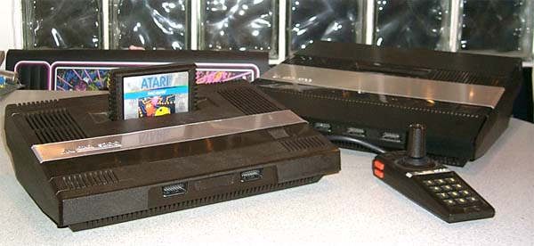
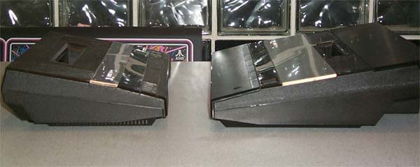
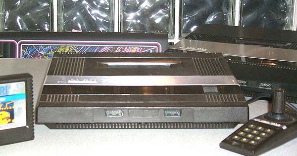
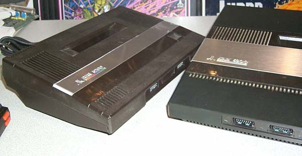

| The Atari 5100
(Little PAM)

 Marketing for Atari said that Bigger is better so the 5200 was HUGE to say the least, but it was cool. It had this big bad ominous look to it that said "I'm the Most Powerful Video Game System Around". Well, to be quite frank, the 5200 was too big. Sure it had storage for its controllers, but it was just too big and more importantly, too expensive (think of the shipping on those things alone!). Atari commissioned its engineers to design a smaller, more low cost version of the 5200 dubbed the 5100 (nicknamed the 5200jr. or Little PAM) The unit functioned exactly as the 2 port 5200, however it was a smaller system board and lacked the expansion port.

The
System looked more or less like a smaller version of the Atari 5200.
The case design was done by Mark Biassotti who also did the Atari 2600jr
case design. The unit is a functional equivalent
of the Atari 5200 2 Port system. It uses the same Power supply
and also uses a standard TV Switchbox instead of the Atari 5200 4 port
version automated switch box/power box. The main difference is the
lack of a storage area for the 2 5200 Controllers.

It's interesting to note; the Atari 2700 console (unreleased) also had a storage compartment for its 2 remote controllers and they were very close in size to the 5200 controllers. The Atari 2700 console is nearly the same size as the 5100 though...
|